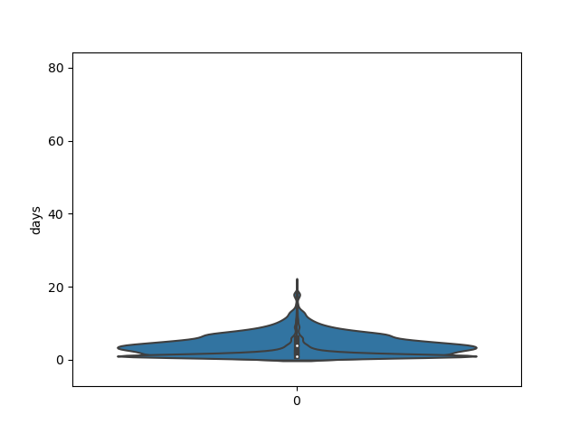
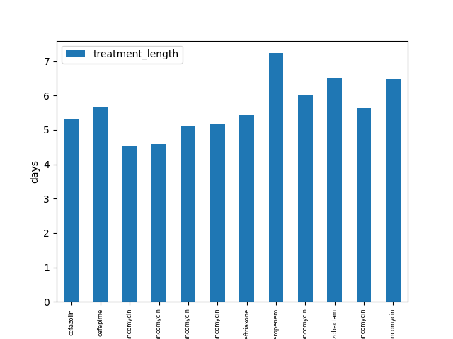

Note
Click here to download the full example code
Antibiotic analysis¶
- 
- 
Out:
['cefepime', 'vancomycin'] 2967
['piperacillin-tazobactam', 'vancomycin'] 1699
['cefepime'] 1645
['vancomycin'] 1634
['meropenem', 'vancomycin'] 1317
...
['cefazolin', 'ceftazidime', 'ciprofloxacin iv', 'vancomycin'] 1
['cefepime', 'ceftazidime', 'levofloxacin', 'sulfamethoxazole-trimethoprim', 'vancomycin'] 1
['nafcillin', 'piperacillin-tazobactam na', 'tobramycin sulfate', 'vancomycin'] 1
['cefepime', 'ceftriaxone', 'meropenem', 'piperacillin-tazobactam', 'vancomycin'] 1
['cefepime', 'ceftazidime', 'ceftriaxone', 'ciprofloxacin iv', 'tobramycin sulfate', 'vancomycin'] 1
Name: antibiotics, Length: 1066, dtype: int64
subject_id hadm_id icd_code date antibiotics
stay_id
30001555 1 1 1 6 1
30004018 1 1 1 9 1
30006983 1 1 1 39 7
30007565 1 1 1 19 6
30009339 1 1 1 17 4
... ... ... ... ... ...
39969187 1 1 1 11 3
39970976 1 1 1 6 1
39986206 1 1 1 41 9
39990055 1 1 1 2 1
39996867 1 1 1 30 7
[1955 rows x 5 columns]
Mean n of antibiotics:
4.456265984654731
Median n of antibiotics:
4.0
Mean length of stay:
13.146291560102302
Median length of stay:
11.0
subject_id hadm_id stay_id icd_code date antibiotics consecutive
0 10004733 27411876 39635619 99731 2174-12-04 ['piperacillin-tazobactam', 'vancomycin'] 1
1 10004733 27411876 39635619 99731 2174-12-05 ['piperacillin-tazobactam', 'vancomycin'] 1
2 10004733 27411876 39635619 99731 2174-12-06 ['piperacillin-tazobactam', 'vancomycin'] 1
3 10004733 27411876 39635619 99731 2174-12-07 ['piperacillin-tazobactam', 'vancomycin'] 1
4 10004733 27411876 39635619 99731 2174-12-08 ['piperacillin-tazobactam', 'vancomycin'] 1
... ... ... ... ... ... ... ...
25696 19997367 20617667 35616526 99731 2126-05-07 ['ceftriaxone'] 1
25697 19997367 20617667 35616526 99731 2126-05-08 ['ceftriaxone'] 1
25698 19997367 20617667 35616526 99731 2126-05-09 ['ceftriaxone'] 1
25699 19997367 20617667 35616526 99731 2126-05-10 ['ceftriaxone'] 1
25700 19997367 20617667 35616526 99731 2126-05-11 ['ceftriaxone'] 1
[25701 rows x 7 columns]
subject_id hadm_id stay_id icd_code date antibiotics consecutive treatment_length
0 10004733 27411876 39635619 99731 2174-12-04 ['piperacillin-tazobactam', 'vancomycin'] 1 10
1 10004733 27411876 39635619 99731 2174-12-05 ['piperacillin-tazobactam', 'vancomycin'] 1 10
2 10004733 27411876 39635619 99731 2174-12-06 ['piperacillin-tazobactam', 'vancomycin'] 1 10
3 10004733 27411876 39635619 99731 2174-12-07 ['piperacillin-tazobactam', 'vancomycin'] 1 10
4 10004733 27411876 39635619 99731 2174-12-08 ['piperacillin-tazobactam', 'vancomycin'] 1 10
... ... ... ... ... ... ... ... ...
25696 19997367 20617667 35616526 99731 2126-05-07 ['ceftriaxone'] 1 6
25697 19997367 20617667 35616526 99731 2126-05-08 ['ceftriaxone'] 1 6
25698 19997367 20617667 35616526 99731 2126-05-09 ['ceftriaxone'] 1 6
25699 19997367 20617667 35616526 99731 2126-05-10 ['ceftriaxone'] 1 6
25700 19997367 20617667 35616526 99731 2126-05-11 ['ceftriaxone'] 1 6
[25701 rows x 8 columns]
Mean antibiotic treatment length:
1.8602251407129455
Median antibiotic treatment length:
1.0
0 piperacillin-tazobactam, vancomycin
1 piperacillin-tazobactam, vancomycin
2 piperacillin-tazobactam, vancomycin
3 piperacillin-tazobactam, vancomycin
4 piperacillin-tazobactam, vancomycin
...
25696 ceftriaxone
25697 ceftriaxone
25698 ceftriaxone
25699 ceftriaxone
25700 ceftriaxone
Name: antibiotics, Length: 25701, dtype: object
subject_id hadm_id stay_id icd_code date antibiotics consecutive treatment_length antibiotics_clean
0 10004733 27411876 39635619 99731 2174-12-04 ['piperacillin-tazobactam', 'vancomycin'] 1 10 piperacillin-tazobactam, vancomycin
1 10004733 27411876 39635619 99731 2174-12-05 ['piperacillin-tazobactam', 'vancomycin'] 1 10 piperacillin-tazobactam, vancomycin
2 10004733 27411876 39635619 99731 2174-12-06 ['piperacillin-tazobactam', 'vancomycin'] 1 10 piperacillin-tazobactam, vancomycin
3 10004733 27411876 39635619 99731 2174-12-07 ['piperacillin-tazobactam', 'vancomycin'] 1 10 piperacillin-tazobactam, vancomycin
4 10004733 27411876 39635619 99731 2174-12-08 ['piperacillin-tazobactam', 'vancomycin'] 1 10 piperacillin-tazobactam, vancomycin
... ... ... ... ... ... ... ... ... ...
25696 19997367 20617667 35616526 99731 2126-05-07 ['ceftriaxone'] 1 6 ceftriaxone
25697 19997367 20617667 35616526 99731 2126-05-08 ['ceftriaxone'] 1 6 ceftriaxone
25698 19997367 20617667 35616526 99731 2126-05-09 ['ceftriaxone'] 1 6 ceftriaxone
25699 19997367 20617667 35616526 99731 2126-05-10 ['ceftriaxone'] 1 6 ceftriaxone
25700 19997367 20617667 35616526 99731 2126-05-11 ['ceftriaxone'] 1 6 ceftriaxone
[25701 rows x 9 columns]
subject_id hadm_id stay_id icd_code date antibiotics consecutive treatment_length antibiotics_clean
0 10004733 27411876 39635619 99731 2174-12-04 ['piperacillin-tazobactam', 'vancomycin'] 1 10 piperacillin-tazobactam, vancomycin
1 10004733 27411876 39635619 99731 2174-12-05 ['piperacillin-tazobactam', 'vancomycin'] 1 10 piperacillin-tazobactam, vancomycin
2 10004733 27411876 39635619 99731 2174-12-06 ['piperacillin-tazobactam', 'vancomycin'] 1 10 piperacillin-tazobactam, vancomycin
3 10004733 27411876 39635619 99731 2174-12-07 ['piperacillin-tazobactam', 'vancomycin'] 1 10 piperacillin-tazobactam, vancomycin
4 10004733 27411876 39635619 99731 2174-12-08 ['piperacillin-tazobactam', 'vancomycin'] 1 10 piperacillin-tazobactam, vancomycin
... ... ... ... ... ... ... ... ... ...
25696 19997367 20617667 35616526 99731 2126-05-07 ['ceftriaxone'] 1 6 ceftriaxone
25697 19997367 20617667 35616526 99731 2126-05-08 ['ceftriaxone'] 1 6 ceftriaxone
25698 19997367 20617667 35616526 99731 2126-05-09 ['ceftriaxone'] 1 6 ceftriaxone
25699 19997367 20617667 35616526 99731 2126-05-10 ['ceftriaxone'] 1 6 ceftriaxone
25700 19997367 20617667 35616526 99731 2126-05-11 ['ceftriaxone'] 1 6 ceftriaxone
[14743 rows x 9 columns]
means:
antibiotics_clean treatment_length
0 cefazolin 5.310048
1 cefepime 5.660182
2 cefepime, ciprofloxacin iv, vancomycin 4.534351
3 cefepime, metronidazole (flagyl), vancomycin 4.579151
4 cefepime, vancomycin 5.126727
5 ceftazidime, vancomycin 5.172249
6 ceftriaxone 5.430440
7 meropenem 7.235669
8 meropenem, vancomycin 6.037206
9 piperacillin-tazobactam 6.529010
10 piperacillin-tazobactam, vancomycin 5.628605
11 vancomycin 6.471236
7 8 9 10 11 12 13 14 15 16 17 18 19 20 21 22 23 24 25 26 27 28 29 30 31 32 33 34 35 36 37 38 39 40 41 42 43 44 45 46 47 48 49 50 51 52 53 54 55 56 57 58 59 60 61 62 63 64 65 66 67 68 69 70 71 72 73 74 75 76 77 78 79 80 81 82 83 84 85 86 87 88 89 90 91 92 93 94 95 96 97 98 99 100 101 102 103 104 105 106 107 108 109 110 111 112 113 114 115 116 117 118 119 120 121 122 123 124 125 126 127 128 129 130 131 132 133 134 135 136 137 138 139 140 141 142 143 144 145 146 147 148 149 150 151 152 153 154 155 156 157 158 159 160 161 162 163 164 165 166 167 168 169 170 171 172 173 174 175 176 177 178 179 180 181 182 183 184 185 186 187 188 189 190 191 192 193 194 195 196 197 198 199 | # Generic libraries
import pandas as pd
pd.set_option('display.max_columns', 20)
pd.set_option('display.width', 2000)
import numpy as np
import seaborn as sns
import matplotlib as mpl
import matplotlib.pyplot as plt
# -----------------------------
# Constants
# -----------------------------
# Path
path = '/home/wb1115/PycharmProjects/ICU_Antibiotic_Cessation/ICU_VAP_diagnoses_antibiotics_formatted.csv'
#path = '/home/wb1115/PycharmProjects/ICU_Antibiotic_Cessation/ICU_SEPSIS_diagnoses_antibiotics_formatted.csv'
# -----------------------------
# Load data
# -----------------------------
# Read data
data = pd.read_csv(path, parse_dates=['date'])
#print(data.info())
#print(data)
counts = data['antibiotics'].value_counts()
print(counts)
#counts.to_csv('ICU_VAP_antibiotics_counts.csv')
#counts.to_csv('ICU_SEPSIS_antibiotics_counts.csv')
# -----------------------------
# Find out number of antibiotics and days in hospital per patient
# -----------------------------
data2 = data.groupby(["stay_id"]).nunique()
print(data2)
#data2.boxplot('date')
#data2.boxplot('antibiotics')
print('Mean n of antibiotics:')
print(data2['antibiotics'].mean())
print('Median n of antibiotics:')
print(data2['antibiotics'].median())
print('Mean length of stay:')
print(data2['date'].mean())
print('Median length of stay:')
print(data2['date'].median())
plt.boxplot([data2['antibiotics'], data2['date']], labels=['n_of_antibiotics', 'length_of_stay'], showmeans=True, meanline=True)
plt.ylabel('days')
plt.show()
sns.violinplot(data=[data2['antibiotics'], data2['date']])
plt.show()
# -----------------------------
# Define if antibiotic treatment is consecutive
# -----------------------------
consecutive1 = [1]
for data1, data2 in zip(data['antibiotics'][:], data['antibiotics'][1:]):
if data1 == data2:
consecutive1.append(1)
else:
consecutive1.append(0)
consecutive2 = []
for data1, data2 in zip(data['antibiotics'][1:], data['antibiotics'][:]):
if data1 == data2:
consecutive2.append(1)
else:
consecutive2.append(0)
#print(consecutive1)
#print(consecutive2)
consecutive3 = []
for n, m in zip(consecutive1, consecutive2):
if n == 1:
consecutive3.append(1)
elif m == 1:
consecutive3.append(1)
else:
consecutive3.append(0)
consecutive3.append(1)
#print(consecutive3)
data['consecutive'] = consecutive3
print(data)
#data.to_csv('ICU_VAP_antibiotics_consecutive.csv')
#data.to_csv('ICU_SEPSIS_antibiotics_consecutive.csv')
# -----------------------------
# Find out mean and SD length of treatment per antibiotic
# -----------------------------
cumcount2 = []
count2 = 1
pos = -1
for x in range(len(data)):
pos += 1
if pos == len(data) - 1:
if data.iloc[x]['consecutive'] == 1:
if data.iloc[x]['antibiotics'] == data.iloc[x - 1]['antibiotics']:
count2 += 1
cumcount2.extend([count2] * count2)
else:
if data.iloc[x - 1]['consecutive'] == 1:
cumcount2.extend([count2] * count2)
elif data.iloc[x]['consecutive'] == 0:
if count2 == 1:
cumcount2.append(1)
else:
cumcount2.extend([count2] * count2)
cumcount2.append(1)
elif data.iloc[x]['consecutive'] == 1:
if x == 0:
pass
#print('pass')
elif data.iloc[x]['antibiotics'] == data.iloc[x-1]['antibiotics']:
#if data.iloc[x]['stay_id'] == data.iloc[x - 1]['stay_id']:
count2 += 1
#else:
# cumcount2.extend([count2] * count2)
# count2 = 1
# print('hi there')
#print('add 1 to count')
#elif data.iloc[x]['antibiotics'] == data.iloc[x-1]['antibiotics']:
# count += 1
else:
if data.iloc[x-1]['consecutive'] == 1:
cumcount2.extend([count2] * count2)
#print('added', count2, 'LOC-1')
count2 = 1
else:
count2 = 1
#print('count2 = 1')
elif data.iloc[x]['consecutive'] == 0:
if count2 == 1:
cumcount2.append(1)
#print('added 1')
else:
cumcount2.extend([count2] * count2)
#print('added', count2, 'LOC-2')
cumcount2.append(1)
count2 = 1
else:
#cumcount2.append(1)
print('???')
#print('cumcount2')
#print(cumcount2)
#print(len(cumcount2))
data['treatment_length'] = cumcount2
print(data)
#print(data.info())
### SAVE DATA ###
#data.to_csv('ICU_VAP_antibiotics_treatment_length.csv')
#data.to_csv('ICU_SEPSIS_antibiotics_treatment_length.csv')
### VISUALISE DATA ###
data3 = data.groupby(['antibiotics']).nunique()
print('Mean antibiotic treatment length:')
print(data3['treatment_length'].mean())
print('Median antibiotic treatment length:')
print(data3['treatment_length'].median())
plt.boxplot(data3['treatment_length'], labels=['antibiotic_treatment_length'], showmeans=True, meanline=True)
plt.ylabel('days')
plt.show()
sns.violinplot(data=data3['treatment_length'])
plt.show()
cleaned_df = data['antibiotics'].str.replace("^\[.|.\]$","")
cleaned_df = cleaned_df.str.replace("\'","")
print(cleaned_df)
data['antibiotics_clean'] = cleaned_df
print(data)
filtered_df = data[data['antibiotics_clean'].map(data['antibiotics_clean'].value_counts()) > 400]
print(filtered_df)
means = filtered_df.groupby('antibiotics_clean', as_index=False)['treatment_length'].mean()
print('means:')
print(means)
#plt.bar(means['antibiotics_clean'], means['treatment_length'])
#plt.show()
bar_plot = means.plot.bar(x='antibiotics_clean', y='treatment_length')
bar_plot.set_ylabel("days")
bar_plot.set_xlabel("antibiotic_treatment_length")
plt.xticks(fontsize=6)
plt.show()
|
Total running time of the script: ( 0 minutes 7.709 seconds)